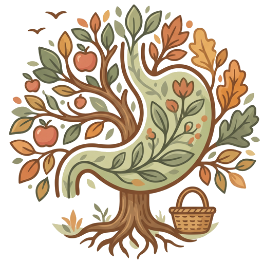

Harmonie & Digestion
Sélectionnez vos sensibilités
1. ÉDITEUR (IMPRESSUM)
L'application mobile est éditée par :
• Raison sociale : Le Petit Marché de mon Estomac
• Adresse postale : Case Postale 2215, Suisse
• E-mail : le_petit_marche_de_mon_estomac@gmail.com
2. HÉBERGEMENT
L'infrastructure de diffusion de l'application est assurée par :
• Hébergeur : GitHub, Inc.
• Adresse : 88 Colin P. Kelly Jr. Street, San Francisco, CA 94107, États-Unis
3. PROTECTION DES DONNÉES ET CONFIDENTIALITÉ
Le respect de votre vie privée est une priorité absolue.
• Fonctionnement local : L'application est conçue pour fonctionner de manière totalement autonome. Toutes les données que vous saisissez sont stockées exclusivement en local sur votre appareil mobile.
• Aucune collecte : L'éditeur ne collecte, ne transmet, ne stocke et ne traite aucune donnée sur des serveurs externes.
4. AVERTISSEMENT MÉDICAL
• Caractère informatif : Outil fourni à titre informatif. Ne remplace pas un avis médical ou un suivi par un diététicien.
• Usage responsable : L'utilisateur est seul responsable de l'utilisation des informations. L'éditeur décline toute responsabilité liée à un changement de régime.
• Garantie technique : La perte de données locales (suppression de l'app, changement de téléphone) n'engage pas l'éditeur.
5. PROPRIÉTÉ INTELLECTUELLE
L'ensemble des contenus (textes, code, graphismes, logos) est la propriété exclusive de l'éditeur. Toute reproduction est interdite sans accord écrit.
6. DROIT APPLICABLE
Soumis au droit suisse. For juridique au domicile/siège de l'éditeur.
1. Profils Digestifs & Bouton "Adaptés"
L'application dispose de 8 profils cliniques que vous pouvez combiner :
Le moteur de l'application adapte l'affichage à votre métabolisme :
✨ Le bouton "Adaptés" : Sur la page d'accueil, ce bouton magique filtre instantanément les aliments pour ne vous afficher QUE ceux compatibles avec le profil choisi !
2. Codes Couleurs & Étiquettes Cliniques (Cliquables 💬)
💡 Astuce : Sur chaque fiche aliment, touchez n'importe quelle petite étiquette (ou la pastille de couleur) pour ouvrir une bulle explicative détaillée !
A. Les Pastilles de Tolérance & Mode Cru / Cuit :
B. Les Critères de Digestion (Estomac & Intestin) :
C. Intolérances & Métabolisme :
💡 Coaching Bienveillant : Dans les recettes, si un ingrédient est sensible, l'application vous propose automatiquement par quoi le remplacer !
3. Mode Édition : Personnaliser vos Fiches
Cliquez sur ✏️ pour vous approprier la base de données :
4. Mode Ajout : Créer de Nouveaux Aliments
Si un ingrédient spécifique manque à votre marché, cliquez sur « + Ajouter » :
5. Gestion des Fiches Masquées
Un aliment ne vous intéresse pas ou vous souhaitez le cacher temporairement ? Cliquez sur le bouton œil barré présent sur chaque fiche.
Retrouver et gérer vos fiches : Rendez-vous dans Paramètres ⚙️ > Gestion des fiches masquées pour les réafficher ou les supprimer définitivement.
6. Gestion des Favoris 💖
Retrouvez en un clin d'œil vos aliments préférés en cliquant sur le bouton FAVORIS à l'accueil.
Ajouter ou retirer : Cliquez sur le petit cœur en haut à droite d'une fiche. Il devient rouge et se synchronise avec l'accueil.
7. Moteur de Recettes & Carnet Global 🍲
🔍 1. Chercher depuis un aliment :
Sur chaque fiche aliment, cliquez sur le bouton "🔍 Chercher une recette". Cette recherche ciblée vous proposera uniquement deux types de recettes intégrées :
💾 2. Comment enregistrer une recette ?
Lorsque vous lisez une recette dans l'application, allez tout en bas et cliquez sur "💾 Enregistrer sur la fiche".
Une petite fenêtre apparaît : vous pouvez y renommer la recette comme bon vous semble ! Une fois validée, elle s'accroche automatiquement à l'aliment que vous étiez en train de consulter, et se range aussi dans Mon Carnet.
📖 3. Le bouton "Mes Recettes" (Accueil) :
C'est votre grand marché gourmand, séparé en 3 onglets :
8. Le Scanner Alimentaire 📸
Accessible directement depuis le bouton MON SCANNER de l'accueil, il vous permet d'analyser instantanément n'importe quel produit en rayon de supermarché via son code-barres :
9. Sauvegardes, Cloud & Partages 💾
☁️ LE COFFRE-FORT CLOUD (Protection & Synchronisation) :
10. Réparation & Restauration des fiches de base 🔄
Si vous supprimez par mégarde un aliment officiel, rendez-vous dans les Paramètres ⚙️ et cliquez sur "Réparer / Restaurer les fiches de base". Le système réinjecte les fiches manquantes sans jamais toucher à vos notes ou recettes personnelles.
11. Mode Sombre (Édition Nocturne) 🌙
Activez le Mode Sombre 🌙 dans les Paramètres ⚙️ pour basculer l'interface dans une ambiance moka et biscuit très douce pour les yeux le soir.
Accédez à nos créations Maison adaptées à votre digestion, complétées par les idées de la base internationale TheMealDB.
Consultez, traduisez et enregistrez vos plats en 1 clic !
Flashez ce code avec votre appareil photo :
Retrouvez ci-dessous la liste de vos fiches masquées :
Aucune fiche masquée pour le moment.
Vos recettes enregistrées et vos pépites personnelles :
Qu'avez-vous sous la main ? Ajoutez jusqu'à 4 ingrédients :
Vos articles triés automatiquement par rayons de supermarché :
Trouvez l'inspiration par envie (Soupe, Curry, Gratin...) :
Choisissez le nouvel aliment auquel vous souhaitez associer cette recette :
Protection & Sauvegarde
Cadrez le code-barres dans le viseur (le scan est automatique).